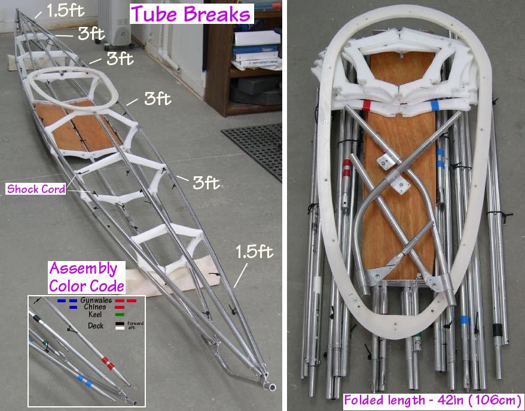

| Sea Otter - Frame Assembly (1 of 8) | Menu Previous Page Next Page |
|
 The 15ft( 457cm) X 20in (51cm) Sea Otter - R is 42in (106cm) long when folded. The gunwales have 6 breakdown sections, and the chines, keel, and deck 4 sections each. Each section is connected with 1/8in shock cord, and colored tape is used to identify the various stringers for assembly ( Bow only). The wider Sea Tour 15-R can utilize the same breakdown setup. |
|